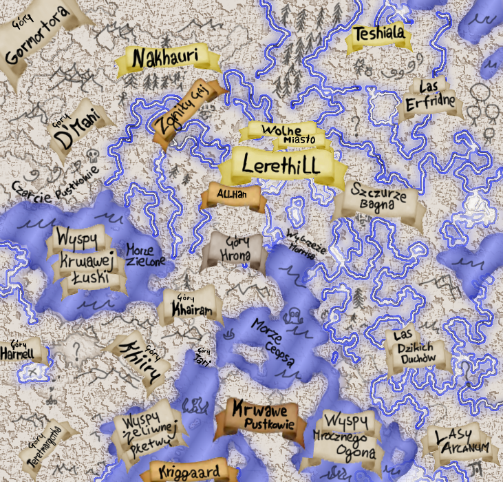

Dobrze że tutaj jesteś! Potrzebujemy nowych rekrutów! Jeżeli znasz kogoś kto byłby w stanie jakkolwiek pomóc proszę daj mu znać o nas!
Miejscowa mapa.

Nowi rekruci przybywają w wolnym mieście aby zapewnić im największą swobode wyboru, jest to również centrum kontynentu.
Nie bój się jednak zajrzeć w odległe tereny, jednak pamiętaj że są tak samo piękne jak niebezpieczne!
Jak zagrać?
Jeżeli to czytasz to pewnie chcesz dołączyć do drużyny podróżników rozsianych po całym Remethor!
Nie lękaj się gdyż dołożyliśmy wszelkich starań by to zadanie było bardzo proste!
Na początku musisz pobrać dodatkową zawartość potrzebną do gry przy użyciu naszego programu,
a następnie wykonać instrukcje krok po kroku!